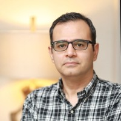
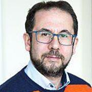
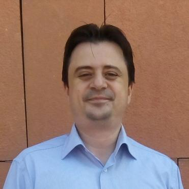

7th Open-Source Computational Mechanics and Acoustics Workshop and Summer Camp
Program

Administrative Staff: Maya Çoban and Eren Kabarık
Scientific Committee: Asst. Prof. Mete Öğüç (Atlas University), Dr. Volkan Karadağ
Meeting Link: https://meet.jit.si/oscmw-2026 Livestream Link:
Highlights:
Prof. Tahsin Khajah, University of Texas at Tyler, U.S.A.
Live on Thursday, Sep.3,2026, 21:30 (UTC+3). Stream Link:

Prof. Gianluca Memoli, University of Sussex, U.K.
Live on Friday, Sep.4,2026, 12:00 (UTC+3). Stream Link:

Prof. Emek Abali, Uppsala University, Sweden
Live on Friday, Sep.4,2026, 16:30 (UTC+3). Stream Link:
Prof. Emre Alpman, Marmara University, Istanbul
Live on Saturday, Sep.5,2026, 15:00 (UTC+3). Stream Link:

Workshop Calender:
Thursday, Sep.03:
13:00 Opening Workshop: Essentials for Beginners
- Speaker: Maya Çoban and Fethi Okyar
- Deliverables:
- Understanding linux, console,
zsh,ssh,python, emacs, etc. - Setting up a virtual Archlinux OS using virtualbox: See Guide
- Maintaining your virtual Archlinux OS: download (~13GB)
- Using an editor: emacs
- Emacs customization
- Understanding linux, console,
17:00 Workshop 2: git for Collaborative Research
- Speaker: Volkan Karadağ
- setting up user accounts, authentication by tokens
- accessing our github repo (mekanotrix)
- creating a new project
- branching and collaborative parallel workflow
- fetch, merge, pull cycle
21:30 Seminar 1: Iterative On Surface Radiation Conditions for Transmission Problem
- Speaker: Tahsin Khajah
- Readings::
Friday, Sep.04:
10:00 Workshop 3: Essential Research Production Tools
- Speaker: Fethi Okyar
- Deliverables:
- Understanding typesetting in LaTeX (local install in console)
- Setting up a bibliographic databes with Zotero
- Using BibTeX to access the bibliography from LaTeX
- Using LaTeX on the cloud with Overleaf
12:00 Seminar 2: Metamaterials In Action
- Speaker: Gianluca Memoli
15:00 Workshop 4: CalculiX: an open-source FEA package
- Speaker: Maya Çoban
- Title: Calculix: An Essential Tool for Finite Element Analyses
- Deliverables:
- Installing and setting up CalculiX and dependencies in an Archlinux environment
- Using the documentation and discourse site for getting help
- Using
cgxandccxin a sample problem - Understanding the CAD/FEA workflow, installing and setting up FreeCAD and Gmsh
16:30 Seminar 3: Advances in Computational Reality
- Speaker: Emek Abali
21:30 Workshop 5: A New Type of Analysis Framework: FenicS/Firedrake
- Speaker: Neşet Biçkin
- Deliverables:
- Working with containers, Docker, installing Fenics
- Introduction to solving PDE's with Fenics
- Using Paraview as an advanced post-processing tool
Saturday, Sep.05:
10:00 Workshop 6: Setting up a local LLM
- Speaker: Volkan Karadağ & Eren Kabarık
- Delverables:
- introduction to LLMs, weights, and transformers
- installing
ollamaas an application/service - talkıng to an LLM, best practices
15:00 Workshop 7: Getting the Topology Optimization Cycle into Work
- Speaker: Emre Alpman
- Resources: https://dafoam.github.io/
- Deliverables:
- About setting up the OpenFoam package
- On the role of automatic differentiation in optimization
- Sample problems and their solutions
21:30 Seminar 4: Current Research in Metamaterials
- Speaker: Neşet Biçkin
Sunday, Sep.06:
10:00 Workshop 8: Using Fenics from JupyterLab
- Speaker: Mete Öğüç
- Deliverables:
- How to install and use JupyterLab as a Docker container
- Using Fenics from JupyterLab
15:00 Seminar 5: On the Solution of Nonlinear Wave Propagation Problems
- Speaker: Tuğçe Sezer
20:30 Dinner at Lunapark Restaurant
Participants:
Scientific Committee
- Asst. Prof. Dr. Mete Öğüç (Ph.D.,2023) Atlas Univ., BME Dept. (Chair)
- Dr. Volkan Karadağ (Ph.D.,2024), Yeditepe Univ., ME Dept. (Part-time Instructor)
Campers:
- Neşet Biçkin (ME,2025), Yeditepe Univ., ME Dept. (Ph.D. Student)
- Pelin Özdemir (B.Sc.,2026), Yeditepe Univ., BME Dept.
- Adam Ruszczak (B.Sc.,2027), Military University of Technology in Warsaw, ME Dept.
- Eren Kabarık (B.Sc., 2027), Yeditepe Univ., ME Dept. (Broadcasting Manager)
- Maya Çoban (B.Sc.,2028), Yeditepe Univ., ME Dept. (Instructor)
- Baran Polat (B.Sc.,2028), Yeditepe Univ., ME Dept.
- Ömer Katrancı (B.Sc.,2028), Yeditepe Univ., ME Dept.
- Dağhan Nart (B.Sc.,2029), Yeditepe Univ., ME Dept.
- Eda Baba, High School Student
- Irmak Tuna, High School Student
Lodging
Camper Instructions:
For those who intend to bring their tents to stay in the camping area
- bisiklet, çadır, çarşaf, terlik, havlu, sinek ilacı, mayo
- günlük atıştırmalık, meşrubat, ve kahvenizi yanınızda getiriniz.